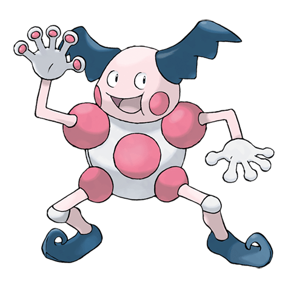

Назад
Мистер Майм

Мистер Майм — Покемон первого поколения под номером 122 в Покедекс. Обитает он в регионе Канто и относится к Психическому типу. Мистер Майм является мастером пантомимы. Его жесты и движения убеждают наблюдателей в том, что нечто невидимое действительно существует. Как только наблюдатели убеждены, невидимая вещь существует, как если бы она была реальной.
Тип:
Психический
Эволюция
# 122 Мистер Майм